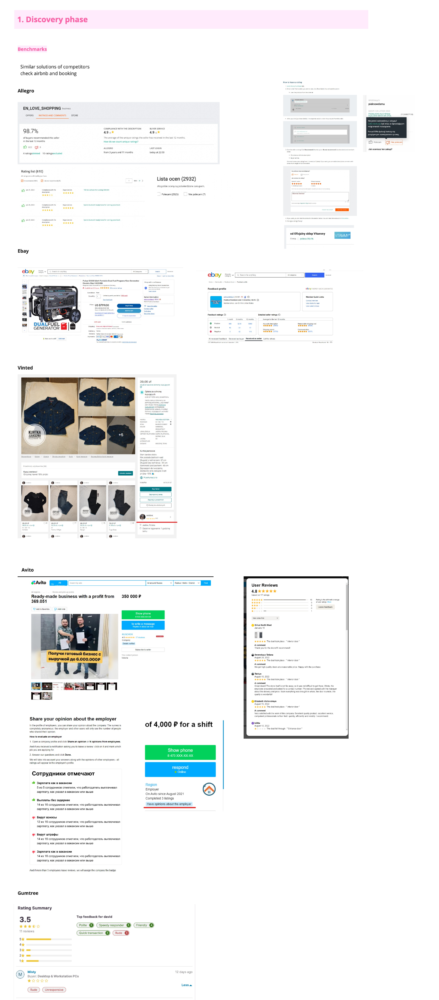
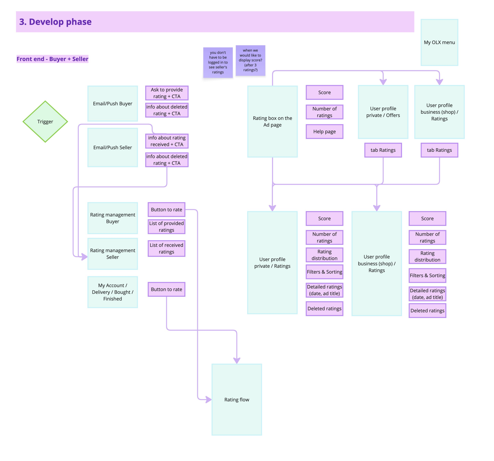
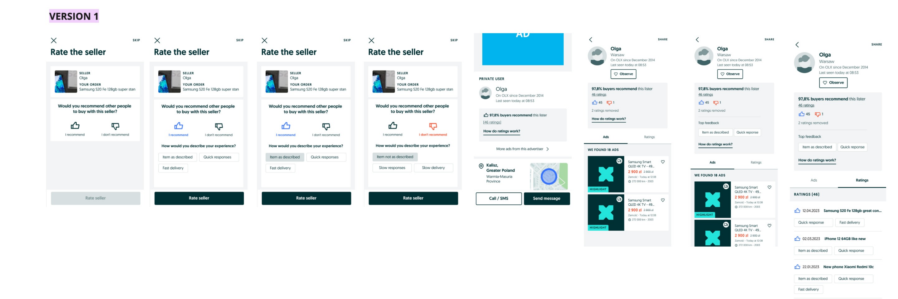
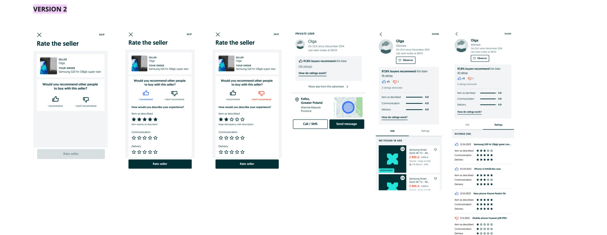
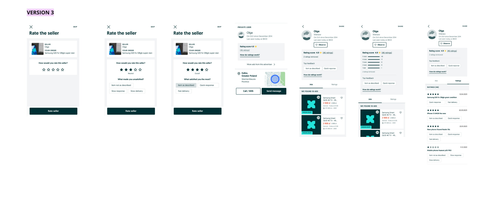
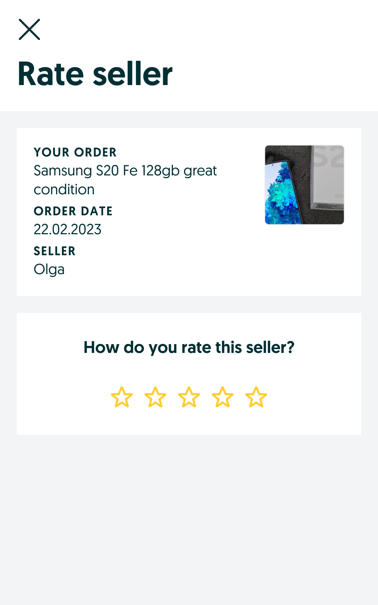
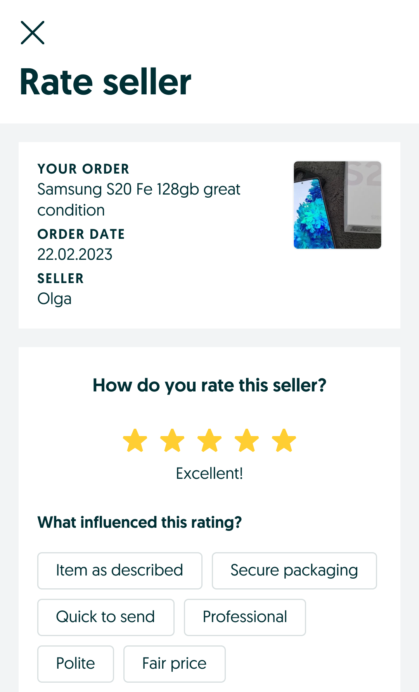
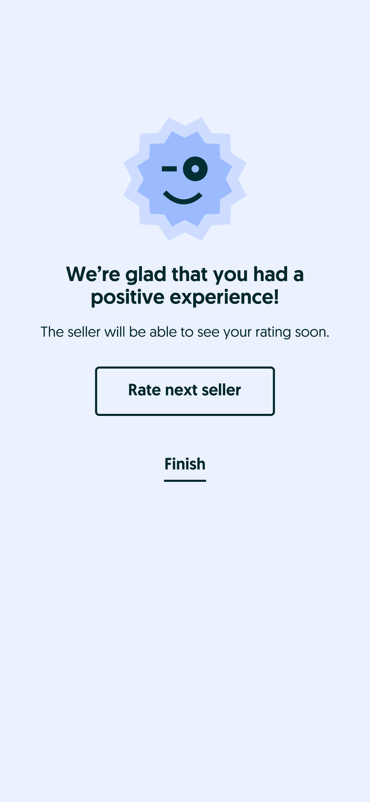
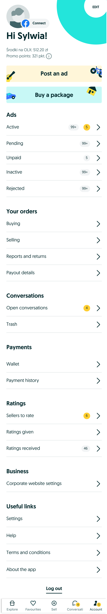
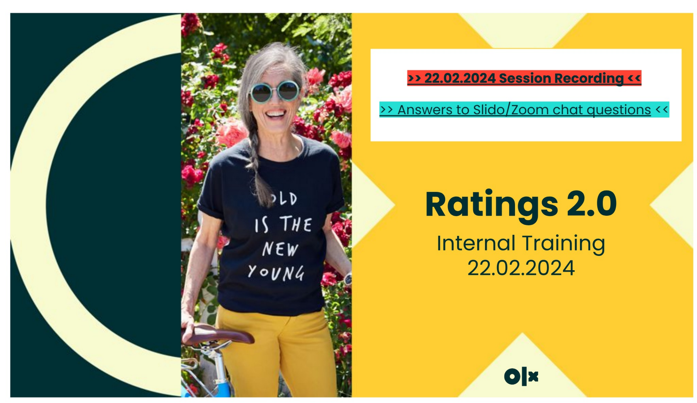

Ratings & Reviews 2.0
Rebuilding OLX's trust layer between buyers and sellers.
The old rating system was broken and barely used; the new one is transparent and gamified, and it raises both seller trust and buyer confidence.
Overview
OLX's peer-to-peer marketplace depends on buyers and sellers trusting each other enough to complete a transaction. The existing ratings system was under-used, easy to game, and gave users little confidence in what a rating actually meant. Ratings & Reviews 2.0 set out to fix the underlying trust problem, not just redesign a star widget.
The project moved through a full design process: extensive discovery research with buyers, sellers, CS agents and moderators; hypothesis-driven definition of the new rating model; iterative development of flows for rating, viewing and moderating reviews; multiple rounds of stakeholder and usability testing; and a phased delivery with internal training and post-launch monitoring.
1. Discovery
The project started from feedback gathered internally (legal, marketing, CS teams) and externally (customer reviews) that flagged the current rating and review system as a source of friction and mistrust. The team also audited how the current trigger and confirmation screens worked, and reviewed which qualifier scores (Bad / Good / Excellent, mapped to numerical ranges of 1–3 to 7–8+) were actually driving user behavior.
Who we talked to
Users
- Buyers and sellers across the transaction journey
- In-depth interviews with both sides of a rating (1st and 2nd phase)
- Usability testing on the new rating flow
Business & stakeholders
- Deputy Director, Head of Regulation, Reviewer, RCP, Legal, Marketing
- Aligning on business expectations and what each stakeholder needed the ratings system to deliver on
The core problems, from both sides
Research surfaced parallel frustrations for buyers and sellers, and mapped what each stage of the flow felt like, plus what the new system needed to fix.
| Pain point | As a buyer | As a seller | Fix in the new system |
|---|---|---|---|
| Understanding what a rating means | Couldn't tell what "good" vs "excellent" actually represented | Same confusion; hard to explain the scoring logic to a buyer | Simplify the rating calculation and make it transparent on both profiles |
| Trust in the number | Didn't trust old/removed ratings still influencing a score | Wanted a fair chance to be re-evaluated, without legacy scores dragging them down | Clear separation of legacy ratings vs. new transactional ratings |
| Ability to act on a bad experience | No easy way to flag or dispute an unfair review | No visibility into why a rating was low, or a route to contest it | Moderation flow with CS review, rejection reasoning, and audit trail |
| Effort to leave feedback | Rating felt like an extra, unrewarded step | Wanted more, higher-quality ratings, not just more friction | Lightweight flow (thumbs + optional tags) triggered right after a confirmed transaction |
CS agent & moderator perspective
| As a CS agent / moderator | The fix in the new system | |
|---|---|---|
| Reviewing disputes | Manual and time-consuming; no clear moderation flag | Ratings flagged automatically before reaching a moderator's queue |
| Deleting a rating | No standardized process; unclear rules on when a rating should come down | Defined moderation rules, statistics, and a clear rejection-reason workflow |
| Understanding rating history | Hard to see a transaction's full context | Background info shown alongside every rating pending review |
Business scope and quality signals
The team assessed key aspects of a "quality" rating system: whether ratings were reasonably frequent, whether the timing between transaction and rating request made sense, whether the language and comments were transparent and non-abusive, and whether outcomes (edits, disputes) were handled consistently.
The qualitative findings were then quantified in a large-scale survey. A buyer problem-quantification survey (May–Jun 2023) reached 416K users, with 3,465 completing it. The top-ranked pain point ("I can't decide which transaction I want to rate and when") directly validated the move to a fully transactional rating tied to a specific, confirmed transaction.
Competitive benchmarking
To ground the new design in proven patterns, the team benchmarked rating and review systems across marketplaces and services with similar trust dynamics: Allegro, eBay, Vinted, Avito, Gumtree, and several booking/rental platforms (including Airbnb-style review flows). This shaped decisions on rating summary displays, distribution breakdowns, filtering, and how competitors handle low ratings and moderation.

2. Defining the model
Hypotheses
The team framed hypotheses in an if/then/because structure for both sides of the transaction:
Seller hypothesis
If we introduce Buyer Rating Management, then sellers' trust in the rating will be higher, because the rating will become an established, stable entry point for providing feedback.
Buyer hypothesis
If we simplify the rating grading (starting from a low-effort binary model as one candidate), then user understanding of the rating will be higher, because the flow requires less effort to complete.
Underlying belief: gathering valuable, quality ratings increases sellers' trust, measured by a change in the share of valid ratings and by higher CX survey scores. Transparency of the rating choice empowers users to make informed decisions and drives higher satisfaction.
Risks considered
- Backlash on removing old ratings: sellers with long, positive histories could see their visible score reset or drop.
- Under-collection: users might not re-rate as many transactions as before if the new flow felt like it required more effort.
An impact analysis of removing old ratings found: 49% of users had no active rating left after removal, and 17% had fewer than 5 ratings. This shaped a phased approach rather than a hard cutover.
Brainstorming & ideation
Using HMW prompts, Crazy 8s, and a mini design sprint (Moscow prioritization), the team explored a wide concept space before converging:
Goal & scope
The team's job to be done: bring value and start gathering quality ratings as fast as possible, addressing users' trust and transaction-growth needs, while acknowledging that with the strongest trigger already in place, they'd refine interaction triggers in a later phase.
Priority 1: cover legal requirements and make ratings fully transactional. Priority 2: respond to user needs (ratings display, ad page integration, mini-sites, private profiles, MyOLX).
Success metrics
Metrics spanned health/UX indicators (positive impact on successful interactions, impact on retention, decision events, ratings vs. VAS) and RRs-specific data: collection data (time to rate, share of eligible users who rate, drop-off during collection) and conversion-funnel data (number of users who view ratings before purchase, correlation between ratings and purchase decisions, repeat-buyer behavior).
3. Building the flows
With the model defined, the team mapped detailed user flows for every actor in the system and moved into wireframing and prototyping.
Core user flows
Buyer rates seller (transactional)
Triggered after a Safe Deal transaction or claim resolution. Eligibility is checked; if eligible, the buyer is prompted to rate via My Account, a push notification, or the Delivery tab. The buyer chooses "I do not recommend" or "I recommend," optionally adds tags, and submits, landing on a confirmation screen. The rating can later be edited or removed from My Account.
Buyer checks a seller's ratings
From the ad page, a buyer can open the seller's ratings, see the distribution, and filter or sort ratings before deciding whether to transact.
Seller receives a rating
The seller is notified by email and sees the rating across My Account, the active ads list, and their public profile. If they disagree with a rating, they can raise a support ticket.
CS moderation
CS reviews a flagged case for moderation, decides whether the rating should be deleted, and if so, provides a rejection reason. Both buyer and seller are notified by email of the outcome, and the rating (and its history) is updated across all surfaces.
Front-end structure
The design covered the full surface area: rating triggers via email/push, a "button to rate" pattern, rating management screens for both buyer and seller, and rating display on the ad page (score, number of ratings, help page) as well as on public and business profiles (score, distribution, filters & sorting, detailed ratings, deleted-ratings history).

Iterating through wireframe versions
Three wireframe versions were designed and tested against each other, moving from a simple thumbs-based model toward a richer star-plus-tags model as legal and product constraints were clarified (see Testing and choosing stars over thumbs, below).



4. Testing and choosing stars over thumbs
Design jams with stakeholders
Three concept versions were reviewed in parallel by the RM Strategic Team (Kate, Ema, Armin, Sylwia) and the Product Design Team, in a design jam with ~10 participants (designers, Design Lead, Design Manager).
| Version | RM Strategic Team feedback | Product Design Team feedback |
|---|---|---|
| V1, Thumbs up/down + tags | Most-liked solution; tags should be optional; concerned about how ratings are represented on the profile; profile IA needs rework; show a summary of tags on the ratings-detail page | Second-most-liked; few comments; keep tags optional and mandatory only for negative ratings; liked the simplicity |
| V2, Thumbs up/down + stars | Second-most-liked; stars could be a good replacement for open-text ratings | Confusing to mix stars with thumbs; hard to describe how it adds value; concern about the amount of grading shown |
| V3, Stars + tags | Too many grades to choose from; added complexity; stars felt more "product" than the rest of the model | Most-liked overall despite complexity; calculation logic still needs simplifying; profile felt information-overloaded; breakdown score should live in the ratings tab, matching a familiar, well-known rating pattern users adjust to quickly |
Outcome: V1 and V3 were carried forward into another iteration round.
Usability testing
Following design critiques and moderated usability tests, key learnings from both stakeholders and users converged on a clearer set of decisions:
- Tags were seen by some as "rude" or "too infantile" when phrased as simple labels; needed better wording
- Too many tags overwhelmed users; too few felt limiting; settled on a curated set plus optional open text
- ~90% of users wanted an open-text option as an add-on, with tags optional
- Most sellers wanted the ability to reply to a rating
- Users wanted a way to verify ratings, plus an info icon explaining the system
- Two entry points to rating should be supported: post-delivery and post-transaction (roughly 50/50 usage split)
- Old ratings should remain visible as additional context, not be hard-deleted
- Ratings should be editable after submission
- Filters needed improvement, and more tag "packaging" was requested
- Users were unsure whether a tag referred to the seller, the item, or the transaction; needed clearer grouping
The final call: stars over thumbs
The grading model came down to a direct comparison between a binary thumbs up/down and a star scale, both paired with tags and (later) open-text comments. After weighing the pros and cons against live user sessions, the team chose stars as the final grading system for four reasons:
- Granularity & transparency: stars let buyers express a nuanced opinion and give sellers a clearer view of what drove their score.
- Familiarity & simplicity: the star pattern is instantly recognizable, so users adopted it with little friction despite the added granularity.
- Objective & quantifiable: a numeric scale is easier to interpret and aggregate into a score.
- Impactful & fair: each rating meaningfully moves the score, keeping the signal honest for both sides.
This was the turning point of the project. The low-effort binary model looked attractive on paper, but the evidence showed users would trade a little extra effort for a rating they found more accurate and easier to trust.
5. Delivery and rollout
The final designs were handed off via Figma with defined acceptance criteria, user-flow checklists, and edge cases prepared for QA and design QA before development.
The shipped screens
The buyer rating flow, played out: select a star grade, add optional tags, one tap to submit.



Rating management for the buyer: rate a seller, review provided ratings, and open a rating's details.


Where ratings surface across the product: the seller box on the ad page, the seller's received ratings, and the MyOLX menu.



To support a smooth rollout, the team ran an internal training session, "Ratings 2.0 Internal Training" (22 Feb 2024), walking Customer Support and other internal stakeholders through the new rating model, moderation rules, and edge-case handling, with a recorded session and a follow-up Q&A log.

6. Outcomes
Ratings & Reviews 2.0 shipped market by market: Poland (3 Jun 2024), Romania (12 Aug 2024), and Ukraine (16 Dec 2024). The phased rollout let the team monitor and adjust before widening coverage.
Early behavioural data also revealed a useful pattern: 5-star ratings were submitted faster (≈7.6 days from delivery on average) than lower grades (≈9.5–10.4 days). Satisfied buyers seem to rate quickly and near-effortlessly, while a slower rating is a soft signal of a more considered, often more negative, experience. This fed directly into how the team thought about timing triggers and follow-ups.
7. Ongoing iteration
Post-launch, the team tracked qualitative user feedback (app reviews, social media, support tickets) alongside quantitative data.
What users told us
Feedback was mixed in the early weeks after launch. Some users pushed back on the new scoring model and the reset of visible history, questioning why prior ratings weren't fully carried over and asking for more transparency on how the new score was calculated. This fed directly into a backlog of trust and clarity improvements (better explanation copy, clearer legacy-rating labeling).
Quantitative tracking
- Success metrics results: tracked against the collection and conversion-funnel metrics defined in Discovery
- Health metrics results: impact on core product health indicators
- A/B test results: validating specific flow and copy variants
- HEART metrics: via surveys, app reviews, and social listening
- Behavioral tracking: Smartlook, Hotjar and UXCam session recordings, used to see exactly how users interacted with the rate-your-seller flow and where drop-off happened
Reflection
The project shows trust design done end to end. It wasn't solved by picking a rating widget. It came from mapping every actor in the ecosystem (buyer, seller, CS agent, moderator), stress-testing multiple concepts against both business and legal constraints and real user behavior, and building in the moderation and transparency mechanics that make a rating trustworthy rather than just visible. Testing three genuinely different concepts (thumbs, thumbs+stars, stars+tags) with both stakeholders and users, rather than converging early, is what surfaced the real trade-off between simplicity and perceived accuracy, and it let the team make that call with evidence instead of opinion.